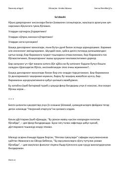

NAE'tiqod, insoniylik va murakkab taqdirlar haqidagi ta'sirli roman.
Ushbu asar insoniy munosabatlar, e'tiqod va hayotiy sinovlar haqida hikoya qiladi. Kitobda boshqa din vakillari bilan munosabatlar, jamiyatdagi turli xil taqdirlar va ruhiy izlanishlar qalamga olingan. Asar bosh qahramoni Jamilaning boshidan kechirgan voqealari orqali kitobxonga chuqur axloqiy saboqlar beradi.